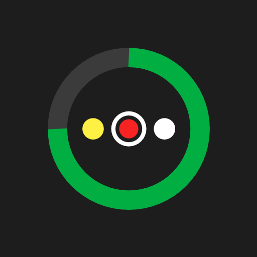

Bambu Status WidgetGoogle lets me publish the widget only after at least 12 people have tested it for 14 days. Thanks for helping! It's free and works on Android 12 and newer.
Tap a picture to see it bigger.
Do this on your Android phone, signed in with the Google account you use for Google Play. Use the same account in all three steps.
Tap Join group on the page that opens. No approval needed.
1 · Join the tester groupTap Become a tester. If Google says the app isn't available, wait a minute after step 1 and try again.
2 · Become a testerInstall Bambu Status Widget from Google Play and keep it installed for at least 14 days.
3 · Install from Google PlayNo printer at hand? Open the app and tap Try the demo – it shows a sample print.
Feedback, bugs or questions: houmer.dev@gmail.com. Thank you!